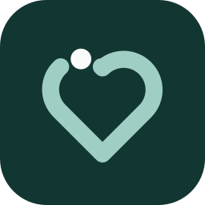

Astronaut Health Monitor
A one-minute daily health check for crew far from Earth. It decides whether a problem can wait for Earth's reply, and runs fully offline. Prototype with simulated crew and data; it does not diagnose.
Try it first
No install needed. Demo mode plays a full check-in by itself: a cursor clicks, taps the number pad and explains each step. It works in the browser only.
All downloads
| System | File | How to install |
|---|---|---|
| Loading the latest release… | ||
Running it
The window can be resized, and F11 (on a Mac: Ctrl ⌘ F) switches to full screen. To always start full screen on a fixed crew panel, start it with --fullscreen. It remembers its size and position.
The installers are not code-signed yet. Windows may show SmartScreen: choose More info → Run anyway. On a Mac, right-click the app and choose Open the first time.